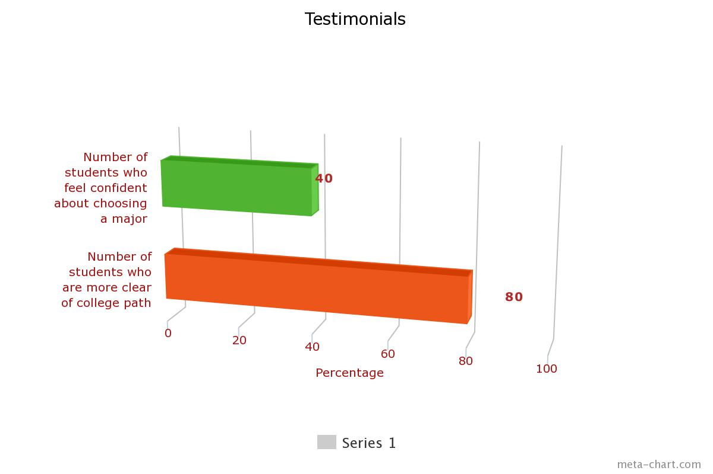

This is Mia (top left picture). She is a Data Science major at the University of San Francisco. She wants everyone to succeed and wants to lead others down a positive path. She likes to spread positivity and inspire others using her past experience to inform others.
This is Rebecca (top right picture). She is a Design major at the University of San Francisco. She is passionate about helping girls in STEM and informing others about the importance of environmental sustainability. She aims to give each of her mentees a clear path and access to the necessary resources they need to succeed.
This is Jayden (bottom picture). He is a full time MBA student at the Haas School of Business at UC Berkeley. He is incredibly passionate about giving everyone equal access to the resources they need to succeed throughout college and post-graduation. He has much knowledge about applying to internships and masters programs.
See how our students have benefitted from our mentors!
